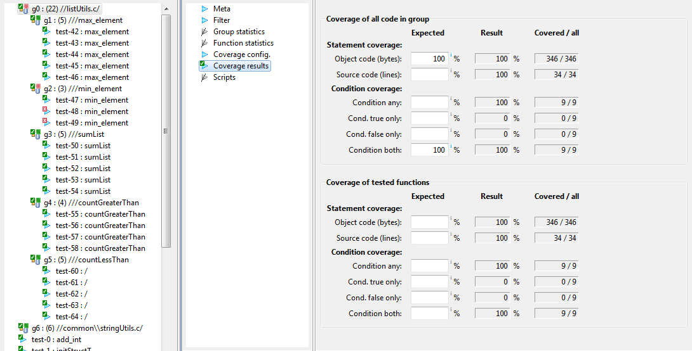

Groups of test cases
Often we want to get test results not only for individual test
case, but for wider scope, for example all code in a
function or module (source file). This information can be obtained
by creating groups of test cases.
The code, which belongs to group is defined in a filter section.
For example, by specifying a module in filter section, all code
from that module is part of the group. testIDEA then shows all
unit test cases, which test code (functions) from the selected group as
members of the group. Test cases can be added to groups only
changing filter settings.
Groups are used only as different view of
existing test cases and to perform statistics on results. They do
not alter relations between base and derived tests. All test cases
still exist on their own in testIDEA - they are shown as test
cases without groups. All test cases in a project are always shown
below the groups in Outline view, as shown in the image below.
Groups are dynamic containers - when
group is created, or testIDEA file is opened, groups contain no
test cases. testIDEA shows which test cases belong to group
only after symbol refresh.
Important: If we use Delete action on test case shown in a
group, the test case will be deleted from a project, not only
removed from the group.
Group hierarchy
Groups can have sub-groups as children. Test cases are first
filtered by parent group, and only those, which pass this filter,
are used as an input to the sub-group.
It is common use case to define parent top level group
with filter for module (source file), and sub-groups with filter
for modules (source files), and sub-sub groups filter test
cases on function being tested.
If parent and sub-groups exist, and a test case belongs to both of
them, then it is shown only in the sub-group. Statistics for
parent group is calculated from all test cases in the group and
sub-groups, because they all belong to the parent group.
Creating groups
Before we create groups it is recommended to refresh symbols in
testIDEA (see command ). Test cases can be properly assigned to groups
only with up-to-date symbols. testIDEA automatically
assigns test cases to groups when symbols are refreshed.
Menu commands
There exist two commands in menu
and in context menu of the Outline view:
-
- creates new group in the top level
-
- creates new group as sub-group of the
group currently selected in Outline view.
Filter in the created group is empty, which means that all test cases
belong to this group. See section Filter
configuration below for details.
Wizard
Wizard can be used to create hierarchies of groups for several
download files, modules, and functions at once. It is accessible
with command
If the wizard is empty, click refresh button in the top right
corner. When group hierarchy is displayed, select groups which you
want to be created. Click OK to create groups.
Filters are already configured in created groups.
Running test cases in groups
During test case development and group configuration it is
possible to run only sub-set of all test cases, for example only
test cases in a group.
Note: Symbols are not automatically refreshed in such
case and test cases are not reassigned to groups, because in
larger projects with many symbols refresh may take few seconds and
refreshing would be annoying when running one or few test cases.
When command is executed,
then symbols are refreshed and test cases reassigned to groups
before the run.
Group results
Group results consist of three sections:
-
Group statistics - contains statistics of results for test
cases, functions, modules and partitions.
-
Function statistics - contains more detailed statistics of
results for functions in a group.

-
Coverage results - contains coverage criteria and measured coverage.
